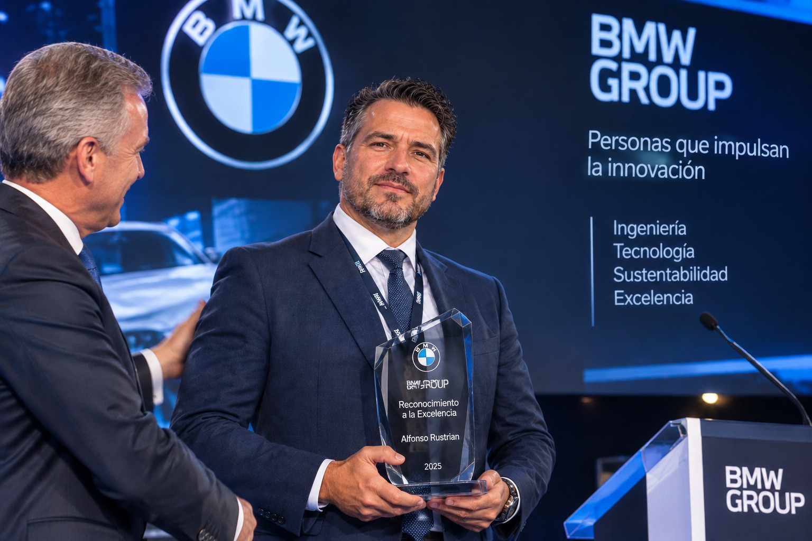

Procesos y operaciones
Interés profesional en el análisis, la documentación y la mejora de procesos de trabajo.
Ingeniería de procesos, mejora continua y transformación digital.
Un espacio para presentar mi perfil profesional, compartir conocimientos y documentar proyectos relacionados con las operaciones y la innovación.
Conoce mi perfil
Un perfil orientado a la optimización de procesos, las operaciones, la mejora continua y el uso de herramientas digitales para organizar y analizar información.
Interés profesional en el análisis, la documentación y la mejora de procesos de trabajo.
Organización de información y exploración de soluciones digitales que faciliten las actividades operativas.
Enfoque en la identificación de oportunidades de mejora y el seguimiento de indicadores.
Esta sección se completará con los puestos, las empresas, las fechas y las responsabilidades confirmadas en la trayectoria profesional.
Añadir aquí el nombre del puesto, la empresa, el periodo y las principales responsabilidades.
Describir proyectos reales, herramientas utilizadas y resultados que puedan documentarse.
Nota: los datos de esta sección deben completarse y verificarse antes de publicar una trayectoria profesional detallada.
Apartado destinado a los estudios, las certificaciones y las habilidades que figuran en el currículum.
Añadir el título oficial, la institución y el año de finalización, una vez confirmados.
Mantener únicamente las competencias que correspondan a su experiencia real.
Incorporar software, cursos y certificaciones confirmados, indicando el nivel cuando proceda.
Espacio para presentar trabajos reales y explicar el problema, el método utilizado y los resultados.
Documentar un caso real de análisis o mejora operativa, con autorización para compartirlo.
Describir una iniciativa real de organización de datos, reportes o documentación.
Explicar un proyecto real de seguimiento de indicadores o análisis de resultados.
Estas tarjetas son espacios preparados para futuros proyectos, no afirmaciones de trabajos ya realizados.
Un espacio para publicar contenido original sobre procesos, operaciones, mejora continua y tecnología.
Ideas para estructurar procedimientos, asignar responsabilidades y mantener documentación clara.
Estado: idea para desarrollar.
Una introducción a los indicadores, sus objetivos y su interpretación responsable.
Estado: idea para desarrollar.
Reflexiones sobre herramientas digitales y oportunidades de mejora en el trabajo.
Estado: idea para desarrollar.
Para conocer más sobre mi trayectoria o consultar acerca de mis publicaciones, visita mis perfiles profesionales oficiales.
LinkedIn: Añadir aquí la dirección del perfil auténtico de Alfonso.
Correo profesional: Añadir una dirección de contacto autorizada.
No se han añadido enlaces sociales ni datos de contacto ficticios.